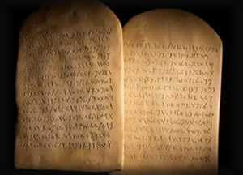

Sinai: Encounter with the Holy (Exodus 19 - 20)
"Now therefore, if you will indeed obey my voice and keep my covenant, you shall be my treasured possession among all peoples." (Exodus 19:5)
Mount Sinai is where heaven touches earth. Israel, freshly delivered, is invited into covenant relationship. But the invitation is not casual - it is holy, weighty, and transformative. Thunder, fire, and cloud surround the mountain. Boundaries are set. God speaks, and the Ten Commandments are given.
Preparation and Presence
Before the encounter, Israel must consecrate themselves. The mountain is fenced off, symbolizing God's holiness. On the third day, God descends in fire, and the people tremble. Moses ascends as mediator, receiving the law and instructions for covenant life.
- Holiness: God's presence demands reverence and preparation.
- Mediation: Moses stands between God and the people.
- Revelation: The Ten Commandments articulate covenant ethics.
The Ten Commandments
God speaks directly to Israel, giving ten foundational commands. These are not mere rules - they are relational boundaries, shaping how Israel lives with God and one another. They reflect divine character and call Israel to be distinct.
Relevance to Salvation
- Salvation leads to covenant - freedom is not lawlessness but holy relationship.
- God reveals His will to guide redeemed people into flourishing.
- The law points forward to Christ, who fulfills and deepens its meaning.
"And God spoke all these words, saying..." (Exodus 20:1)